Anne
Frank
Ausgrenzung, Rassismus, Verfolgung…
…und was das mit uns heute zu tun hat.
Gestaltet von Hirmer
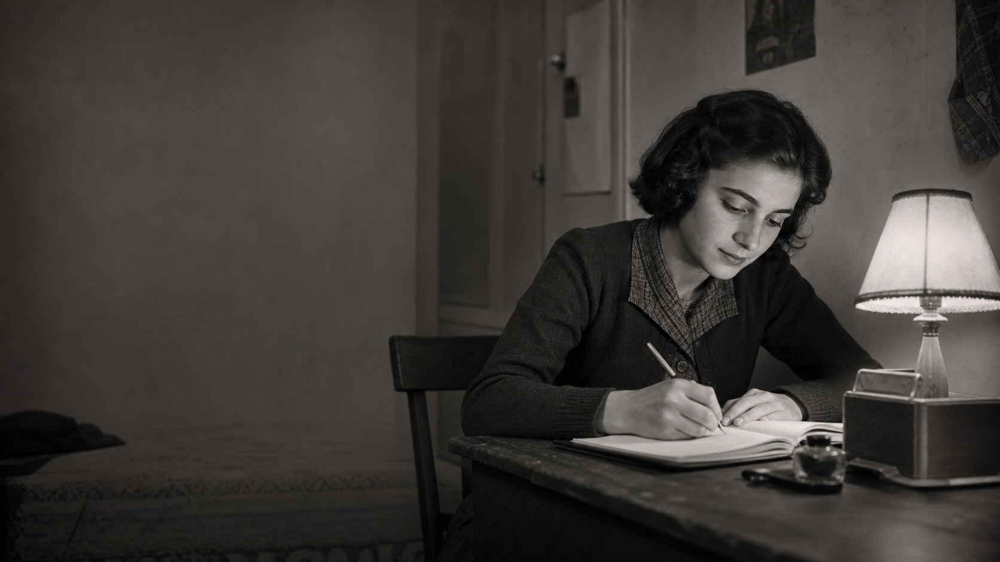
Ausgrenzung, Rassismus, Verfolgung…
…und was das mit uns heute zu tun hat.
Gestaltet von Hirmer

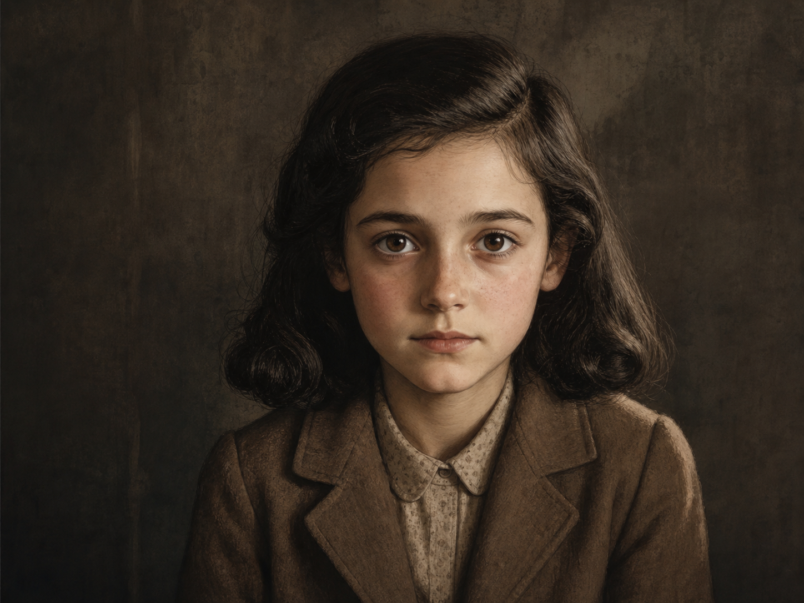
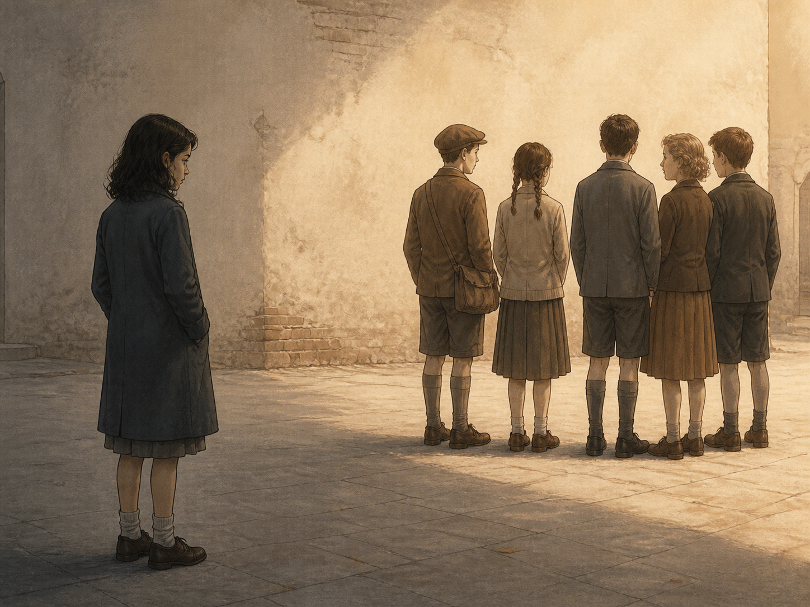
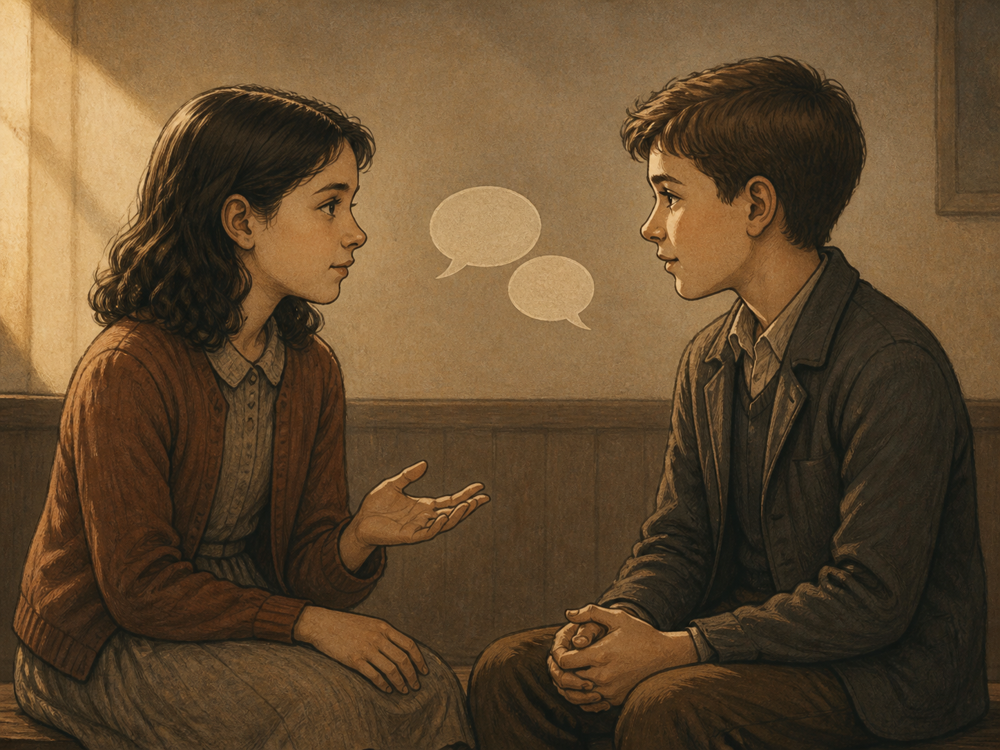
Anne und ihre Familie mussten sich über zwei Jahre im Hinterhaus in Amsterdam verstecken.
In dieser Zeit schrieb Anne alle ihre Gedanken und Gefühle in ihr Tagebuch – das einzige, was ihr blieb.
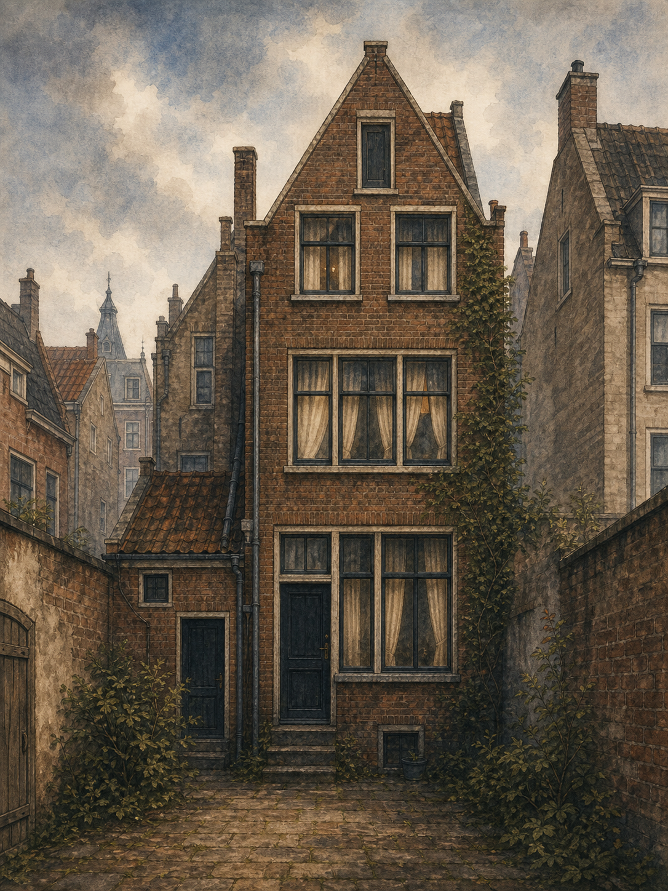
Achte im Video: Wer war außer Familie Frank dabei?
Wer hat sich noch im
Hinterhaus versteckt?
Achtet im Video auf diese Antwort.
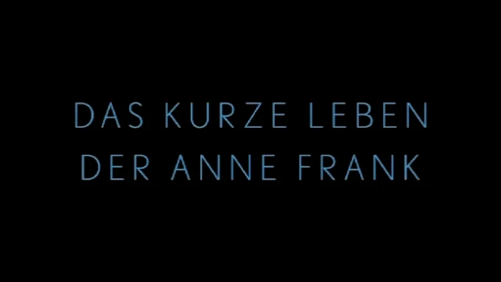
Lest die Aufgaben durch und bearbeitet sie in Einzelarbeit.
Anklicken zum Vergrößern
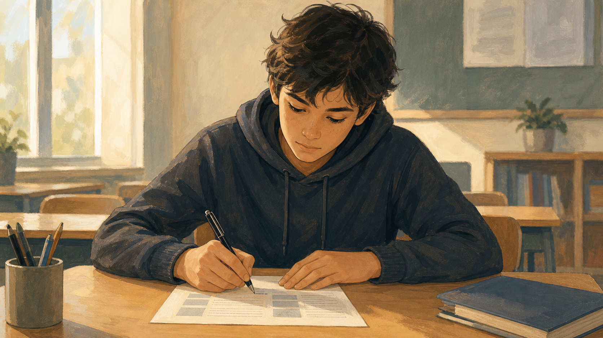
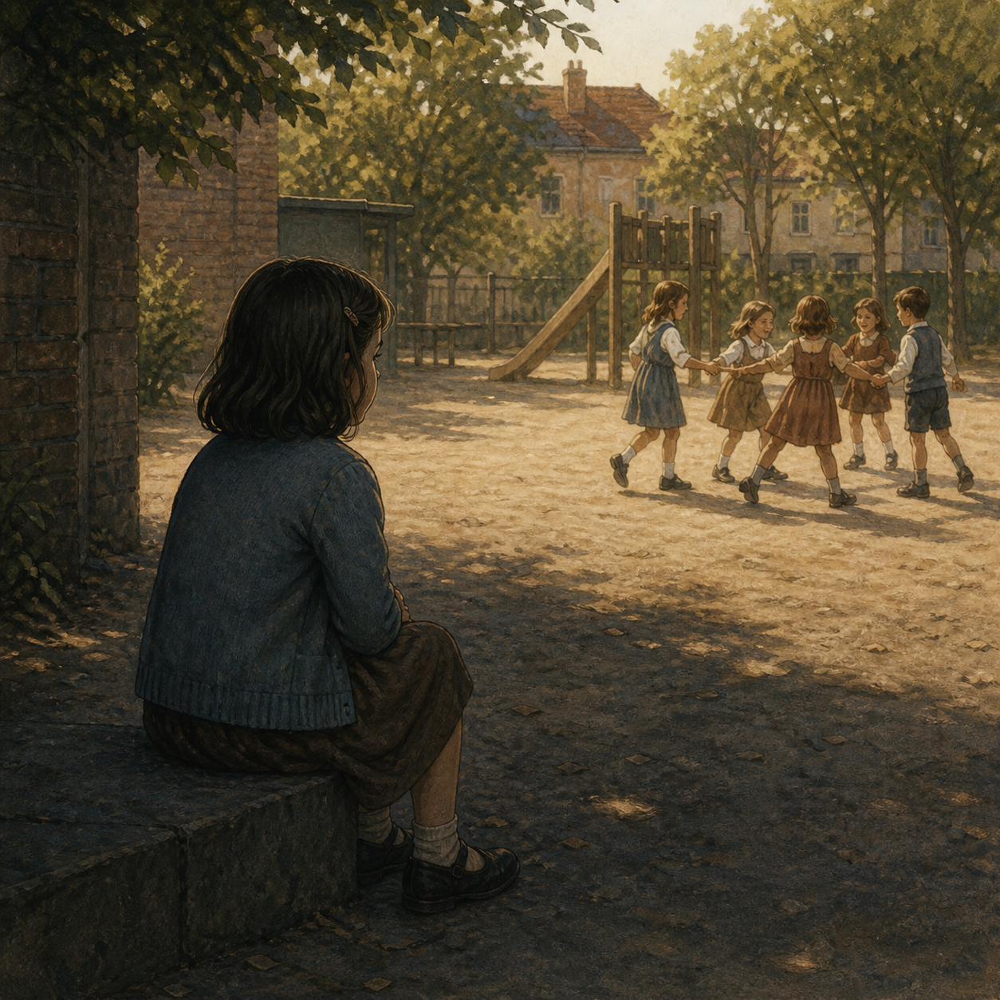
Wenn jemand absichtlich von einer Gruppe ferngehalten oder ignoriert wird.
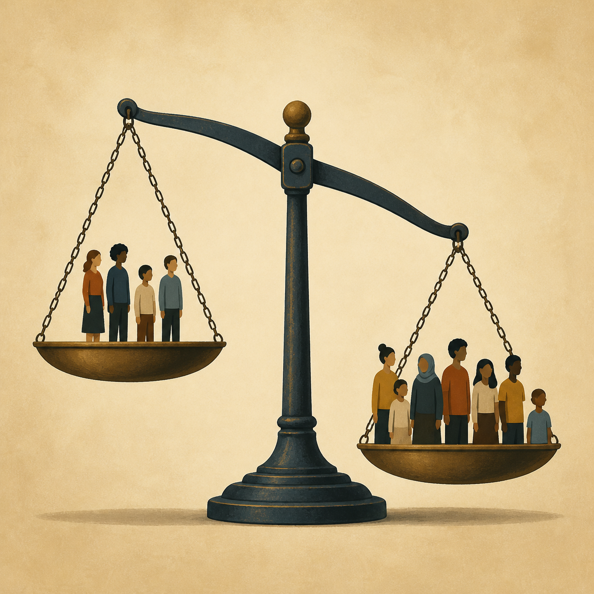
Wenn jemand schlechter behandelt wird, weil er anders ist – zum Beispiel wegen Religion, Behinderung, Geschlecht oder Aussehen.
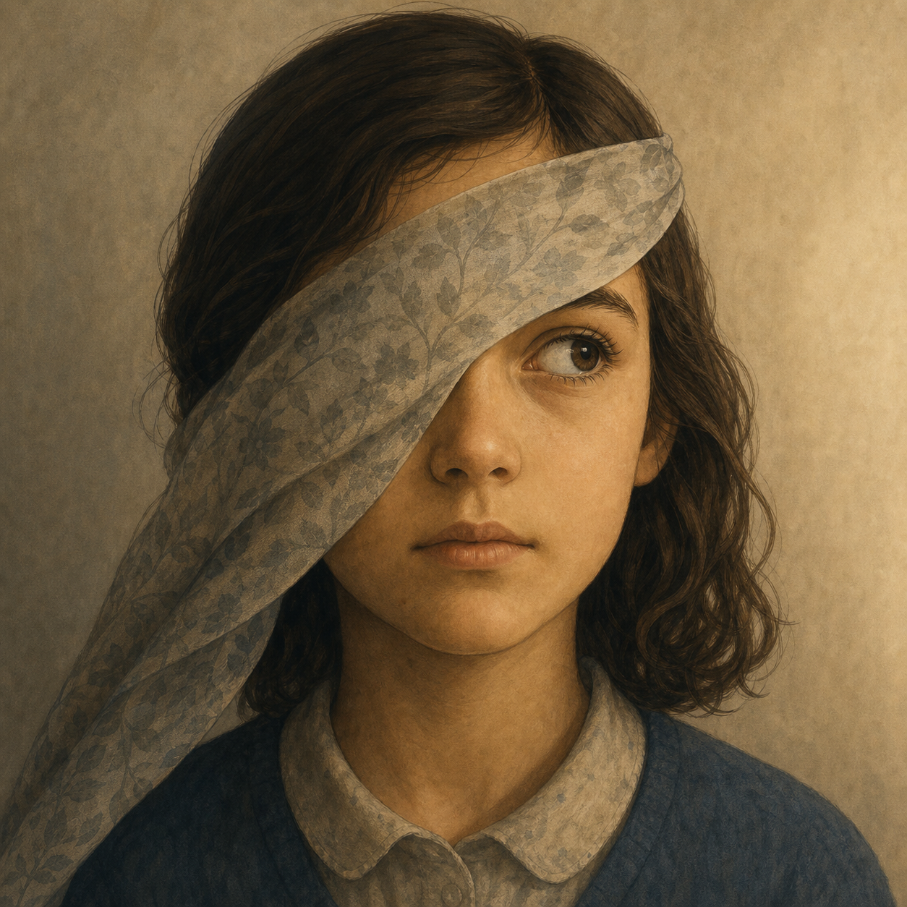
Eine Meinung über jemanden, ohne ihn wirklich zu kennen – oft falsch und verletzend.
Eine besondere Form von Diskriminierung – Menschen werden benachteiligt, weil sie eine andere Hautfarbe oder Herkunft haben.
Fallbeispiele in Gruppen bearbeiten.
Je eine Perspektive: Opfer · Täter · Beobachter
Anklicken zum Vergrößern
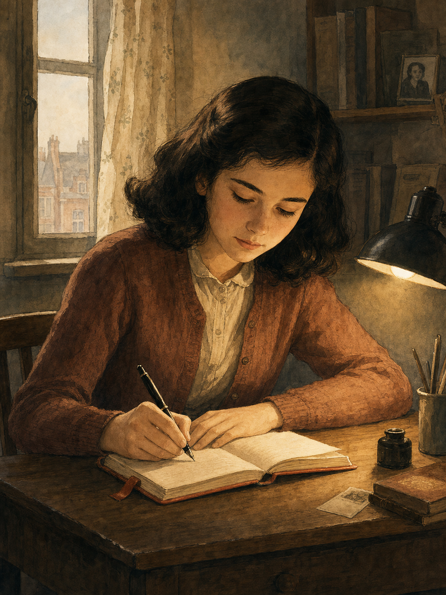
Auf dem Pausenhof wird ein Schüler wegen seiner Herkunft oder seiner Sprache ausgelacht.
Die meisten schauen nur zu.
Wie könnten wir in dieser Situation reagieren?
„Wie wunderbar ist es,
dass niemand einen Moment warten muss,
um die Welt zu verbessern."